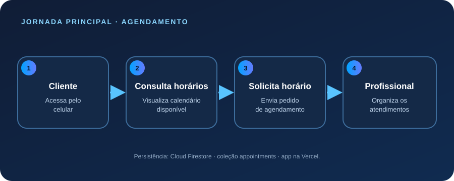
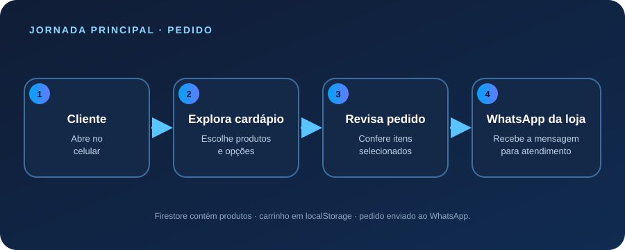
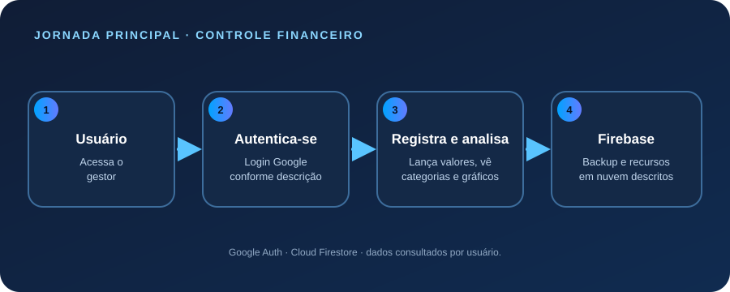
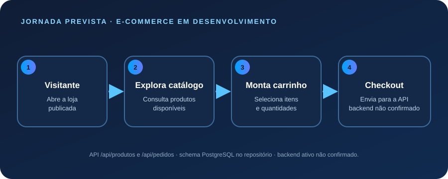
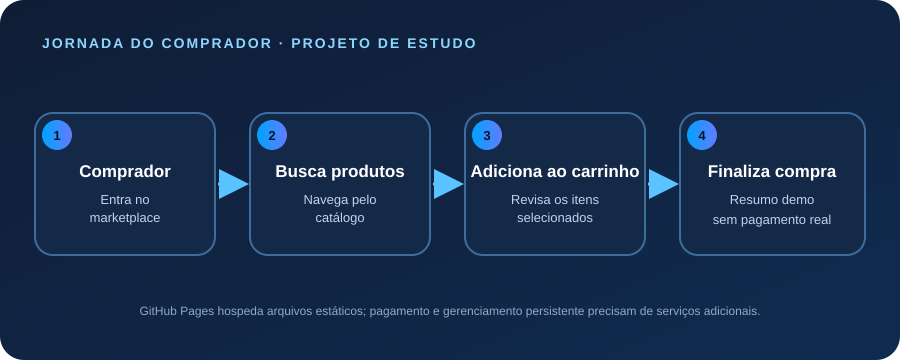
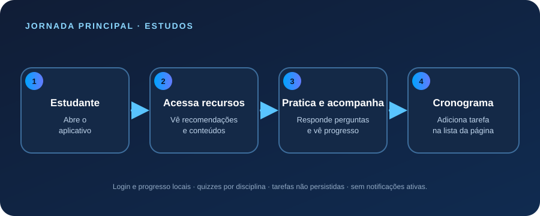

Olá! Meu nome é Kerlon Luan, tenho 18 anos e sou um desenvolvedor front-end apaixonado por criar experiências digitais envolventes. Atualmente, estou cursando Análise e Desenvolvimento de Sistemas, o que me proporciona uma base sólida em programação e desenvolvimento web. Estou sempre em busca de novos desafios e oportunidades para aprimorar minhas habilidades e contribuir para projetos inovadores.
Meus Projetos
Role para conhecer cada projeto por dentro: veja a interface, o diagrama do caso de uso, as decisões técnicas, onde está publicado e o código-fonte.
Projetos em destaque
Cliente Real
Design de Sobrancelhas
Plataforma de agendamento online com calendário em tempo real. Cliente agenda pelo celular e a profissional recebe tudo organizado. React, Firebase, Tailwind, FullCalendar.
Estudo de caso completo · clique para recolher

Diagrama do caso de uso — fluxo de agendamento descrito para o produto.
Problema e objetivo
Facilitar o contato entre clientes e a profissional de design de sobrancelhas, permitindo consultar horários e solicitar um atendimento pelo celular, com a agenda organizada em calendário.
Atores e fluxo principal
A cliente informa nome, data, técnica/serviço e horário no formulário.
A aplicação valida os campos e grava o agendamento na coleção appointments do Cloud Firestore.
Após salvar, o calendário atualiza e exibe horários disponíveis e atendimentos em vistas de dia, semana ou mês.
A profissional consulta os dados do atendimento (nome, data, horário e serviço) no calendário.
Cancelamento, edição de reserva e notificações por e-mail aparecem no repositório como próximos passos, não como funcionalidades concluídas.
Escopo e arquitetura implementada
Frontend React com Vite; Tailwind CSS, FullCalendar e componentes de interação visual. O módulo Firebase inicializa o Firestore Web SDK: saveAppointment cria documentos e loadAppointments consulta os agendamentos. Cada documento inclui name, date, slot, service e createdAt. A interface atualiza o calendário após salvar e mantém cache em memória por até 30 segundos.
Banco de dados e proteção de dados
Banco: Cloud Firestore (Firebase), coleção appointments. São tratados nome, horário e serviço. Atenção: o README mostra uma regra de exemplo com leitura e escrita públicas (allow read, write: if true), inadequada para produção. Não usar dados reais de clientes até restringir as regras e revisar credenciais/configuração no Firebase Console. A região do banco não está documentada.
Execução, deploy e documentação
O README orienta instalar as dependências npm, copiar .env.example para .env, preencher a configuração Firebase e iniciar o Vite. Também descreve testes de conexão, funcionalidades, solução de problemas e estrutura dos documentos. Hospedagem: Vercel — abrir aplicação. Documentação e código:consultar repositório e README.
Tecnologias verificadas: React 18, Vite, Tailwind CSS, Firebase/Firestore, FullCalendar, Framer Motion e Three.js/React Three Fiber. Diagrama conceitual baseado no fluxo implementado.
Cardápio digital + sistema de pedidos via WhatsApp. Design mobile-first otimizado pra conversão e vendas rápidas. React, Vite, Tailwind.
Estudo de caso completo · clique para recolher

Diagrama do caso de uso — da consulta do cardápio ao contato com a loja.
Problema e objetivo
Oferecer um cardápio digital simples e adaptado ao celular para que clientes conheçam os produtos e encaminhem um pedido ao estabelecimento pelo WhatsApp.
Atores e fluxo principal
O cliente filtra produtos por categoria, consulta preços e escolhe itens personalizáveis com adicionais.
O cardápio carrega em tempo real os produtos da coleção produtos no Cloud Firestore; o carrinho é mantido no app e salvo em localStorage.
No checkout, o cliente informa nome, endereço e forma de pagamento; o app calcula o subtotal e a taxa de entrega.
Ao finalizar, o sistema monta uma mensagem com itens, quantidades, adicionais e valores e abre o WhatsApp da loja.
Na rota /admin, há operações de inclusão, edição, remoção e marcação de produto esgotado.
O pedido é encaminhado ao WhatsApp; não há gravação do pedido no Firestore confirmada no código.
Escopo e arquitetura implementada
Frontend React/Vite com cardápio, filtros, adicionais, carrinho, checkout e painel administrativo. Firebase Web SDK acessa o Cloud Firestore; o catálogo acompanha atualizações e a administração realiza operações CRUD. O carrinho persiste localmente no dispositivo. Número de WhatsApp e senha administrativa são lidos de variáveis Vite.
Banco, dados e segurança
Banco: Cloud Firestore, coleção produtos. Carrinho: localStorage. Pedidos: enviados ao WhatsApp, sem persistência confirmada no banco. Os produtos incluem campos como nome, descrição, preço, categoria, imagem, adicionais e disponibilidade. A senha do painel é validada no frontend e a sessão fica em sessionStorage; isso não é uma barreira de segurança real. Proteger as operações com autenticação e regras Firestore restritivas antes de usar dados reais.
Publicação e documentação
Hospedagem: Vercel — abrir cardápio. A rota de administração no código é /admin; não deve ser considerada segura apenas pela senha da interface. Repositório:consultar código-fonte e configuração. O README publicado é o modelo inicial do Vite; esta documentação funcional foi descrita a partir do código.
Dashboard completo pra controle de patrimônio. Registra receitas, despesas, investimentos, imóveis, carros e lazer. Gráficos em tempo real com Chart.js, autenticação Google e backup na nuvem. React, Firebase, Tailwind.
Estudo de caso completo · clique para recolher

Diagrama do caso de uso — registro e acompanhamento financeiro pessoal.
Problema e objetivo
Reunir em um único painel informações financeiras e patrimoniais pessoais para apoiar o acompanhamento de receitas, despesas, investimentos, imóveis, veículos e lazer.
Atores e fluxo principal
O usuário acessa o sistema e autentica-se com Google, conforme a descrição do projeto.
Registra ou consulta categorias de movimentações e itens do patrimônio.
Analisa os dados por meio de gráficos e utiliza os recursos de backup em nuvem descritos.
Permissões, edição, exportação e recuperação de conta são comportamentos que precisam ser confirmados no código.
Escopo e arquitetura implementada
Aplicação React organizada em módulos para finanças, investimentos, lazer, imóveis e automóveis, com calculadora e gráficos Chart.js. A autenticação usa Firebase Authentication com Google. O frontend consulta e grava dados no Cloud Firestore; investimentos, lazer, imóveis e automóveis filtram registros pelo userId. O módulo financeiro mantém um documento principal e snapshots de histórico por usuário.
Banco e dados conhecidos
Banco: Cloud Firestore no projeto Firebase de ID planejamento-ea0ca, conforme a configuração publicada no repositório. Coleções observadas: investimentos, lazer, imoveis, automoveis e financas; incluem valores e campos próprios de cada módulo. O histórico financeiro é salvo em uma subcoleção do documento do usuário. Login: Firebase Auth via Google. A região do Firestore não está documentada e deve ser confirmada no Console.
Segurança e privacidade
Os registros financeiros e patrimoniais são sensíveis. Filtrar por UID no frontend não substitui regras de segurança: o Firestore deve validar a autenticação e a propriedade dos documentos em cada operação. Revisar as regras, privacidade, retenção, exportação e exclusão dos dados antes de cadastrar informações reais. A configuração de cliente Firebase no repositório não substitui essas proteções.
Publicação e documentação
Hospedagem: Vercel — abrir gestor publicado. Repositório:consultar código e configuração. O README publicado é o modelo inicial do Vite; a documentação funcional desta página foi elaborada a partir dos componentes e serviços do aplicativo.
Tecnologias verificadas: React, Firebase Authentication, Cloud Firestore, Chart.js, React Icons, AOS e Vite. A ferramenta organiza informações e não constitui orientação financeira.
Projeto de e-commerce com catálogo, perfil, endereço, carrinho e fluxo de compra. Frontend React/Vite; o repositório inclui schema PostgreSQL e integração planejada via API.
Estudo de caso completo · clique para recolher

Diagrama do caso de uso — fluxo do frontend e chamada à API de pedidos.
Problema e objetivo
Projeto de e-commerce em desenvolvimento que explora a experiência de navegação por catálogo, seleção de produtos, carrinho e checkout.
Atores e fluxo principal
O visitante pesquisa o catálogo e consulta os produtos.
Adiciona produtos ao carrinho e ajusta quantidades.
Informa/valida endereço; o frontend calcula distância e frete segundo as regras no código.
Na finalização, a aplicação tenta enviar itens e total para POST /api/pedidos e atualiza o histórico.
O frontend também carrega produtos por GET /api/produtos e histórico por GET /api/pedidos; o fluxo depende da API estar acessível.
Escopo e arquitetura verificada
Frontend React com Vite, organizado em áreas de catálogo, carrinho, histórico de compras e perfil/localização. O frontend utiliza VITE_API_URL, com padrão local http://localhost:3001, para solicitar catálogo e pedidos. Perfil e outros dados de interface são mantidos localmente em partes da aplicação. O repositório contém schema SQL e instruções de banco; a conexão efetiva depende de backend.
Banco, estado de implantação e segurança
O repositório inclui database/schema.sql para PostgreSQL e orienta criar o banco e_cormeci. Porém, o README esclarece que o frontend ainda usa dados locais de demonstração e que o acesso ao PostgreSQL deve ser feito por uma API backend. Portanto, a existência do schema não comprova um banco remoto nem que ele esteja conectado ao site. Nunca colocar senha/credenciais de banco no bundle Vite; o backend deve validar preços, produtos, endereço e pedidos.
Publicação e documentação
URL publicada informada: Render — abrir aplicação. Isso não confirma que API ou banco estejam publicados no Render. Documentação:repositório, README e database/schema.sql. Verificar configuração de serviço, API e PostgreSQL no painel de deploy para identificar os endpoints ativos.
Tecnologias verificadas: React, Vite, JavaScript, CSS e schema PostgreSQL; API HTTP consumida pelo frontend. Backend e banco remoto: não confirmados em produção.
Protótipo de marketplace com catálogo, filtros, detalhes de produtos e carrinho. O checkout demonstra o resumo da compra; não processa pagamento real.
Estudo de caso completo · clique para recolher

Diagrama do caso de uso — jornada de compra proposta.
Problema e objetivo
Estudo de uma experiência de comércio eletrônico para apresentar produtos, permitir a seleção de itens e explorar a jornada de compra em uma interface web.
Atores e fluxo principal
O comprador navega por categorias e consulta detalhes, preço, avaliações e variações do produto.
Escolhe opções/quantidade e adiciona o produto ao carrinho; pode alterar ou remover itens.
Abre a finalização e recebe um resumo da compra, incluindo quantidade e total.
O código encerra o fluxo com mensagem de demonstração e remoção do item do carrinho; não há confirmação de pedido em servidor nem transação financeira.
Escopo e arquitetura implementada
Site estático em HTML, CSS e JavaScript, incluindo catálogo categorizado, filtros, modal de detalhes, modal de compra rápida, variações e carrinho no estado da página. Os dados do catálogo são carregados por scripts/arquivos do projeto. Não foi identificada API, painel administrativo conectado ou persistência de pedidos entre sessões.
Dados, pagamento e limites
Banco de dados: nenhum identificado; carrinho em memória da página. Pagamento: nenhum gateway integrado. O checkout monta um resumo de demonstração e pode exibir um número aleatório de pedido, mas isso não representa pedido persistido ou pagamento aprovado. GitHub Pages apenas hospeda arquivos estáticos. Para produção são necessários backend para catálogo/estoque/pedidos e provedor de pagamento seguro.
Repositório:consultar código-fonte e arquivos do projeto. Configurações de publicação devem ser conferidas no repositório; este estudo descreve o funcionamento observado no código.
Tecnologias verificadas: HTML, CSS e JavaScript (há também uma versão mobile com React via CDN/Babel). Projeto demonstrativo, sem processamento financeiro real.
Protótipo educacional com cadastro local, matérias, quizzes, progresso por disciplina e links de estudo. Sem banco remoto; credenciais ficam no armazenamento do navegador.
Estudo de caso completo · clique para recolher

Diagrama do caso de uso — quizzes e cronograma de tarefas.
Problema e objetivo
Aplicativo em desenvolvimento para apoiar a organização dos estudos com recomendações de sites, perguntas e respostas, lembretes e acompanhamento do progresso.
Atores e fluxo principal
O estudante cria uma conta com nome, e-mail e senha; depois pode entrar com as credenciais cadastradas.
No painel, consulta páginas de matérias e links externos de estudo.
Escolhe uma disciplina, responde às perguntas e envia as respostas.
O sistema compara as respostas, mostra acertos e atualiza o percentual de progresso por disciplina.
O cronograma permite adicionar tarefas à lista visível.
O painel inclui uma seção de notificações informativa, mas o código consultado não implementa envio de notificações. As tarefas aparecem na página, sem persistência confirmada.
Escopo e arquitetura implementada
Site estático dividido entre index.html (cadastro/login) e panel.html (matérias, quizzes, progresso, cronograma e notificações), com CSS e JavaScript nativos. As perguntas dos quizzes estão definidas no próprio script. O cadastro e a autenticação são feitos somente no navegador; não há serviço de autenticação ou API no código consultado.
Armazenamento e segurança
Banco remoto: nenhum identificado. Nome, e-mail e senha são guardados em localStorage; a senha é armazenada em texto simples. O progresso dos quizzes fica em memória JavaScript e as tarefas são inseridas na página, então não há persistência garantida após recarga. Este protótipo deve ser usado somente para demonstração, nunca com senhas reais ou dados pessoais. Uma versão de produção precisa de autenticação e persistência seguras no servidor.
Publicação e documentação
Hospedagem: GitHub Pages — abrir tela de entrada. O painel é a página panel.html no repositório. Código-fonte:consultar arquivos do projeto; a descrição técnica acima complementa o repositório, que não apresenta documentação funcional detalhada.
Tecnologias verificadas: HTML, CSS e JavaScript nativo. Sem banco remoto nem mecanismo ativo de notificações.